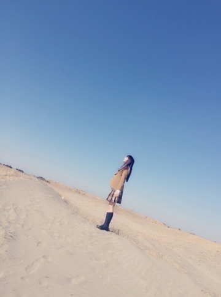
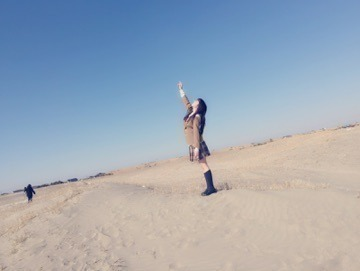
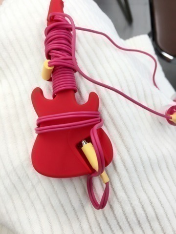
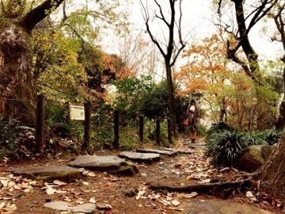
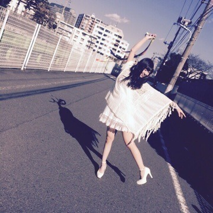
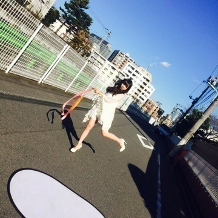
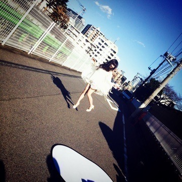

こんばんわ。
皆さん今日も1日お疲れ様でした❤️
前回のblogコメント沢山ありがとう。
スカパーの事や,乃木團の事や,私の好きな所を沢山書いてくださり,本当に嬉しかったです。
いつも皆さんからの暖かいメッセージで元気をもらってます。 本当にありがとう。
11th 「命は美しい」ジャケ写, off shot

いい天気...気持ちよかったです．

皆さん,花粉は大丈夫ですか？
私も花粉症持ちなので辛い気持ちはすごく分かります（ ｉ _ ｉ ）
でも私は4月がピークなので今はまだ大丈夫です♩
まいまいから
お揃いのギター型イヤホン収納をもらったよ！

可愛い～。
貰ってから早速使ってるよん❤️
これは のぎ天の私服で撮影した時のです.＊
なんか本当むっちゃ寒かったぁぁ（ ｉ _ ｉ ）
上半身完全防備。

これはUTB＋の off shot♩
撮影は12月でした。

沢山ジャンプしたよん。

すごい寒かったけど、楽しかったあ❤️

モバメや755にも書いたんだけど、
2月から高校の友達が上京してきたの！
土曜にやっと会えたんだあ（＾ω＾）
これからは大阪に行かなくても、東京ですぐに友達と会えると思うと すっごく嬉しい♩
それとそれと！！
こないだ まあやが広島に居る家族とTV電話してたの(*^_^*)
だから私も一緒に2時間位TV電話しました♩
まあやのお母ちゃん,お父ちゃん,お兄ちゃん本当に大好き！
またblog更新するね。
おやすみなさい❤️